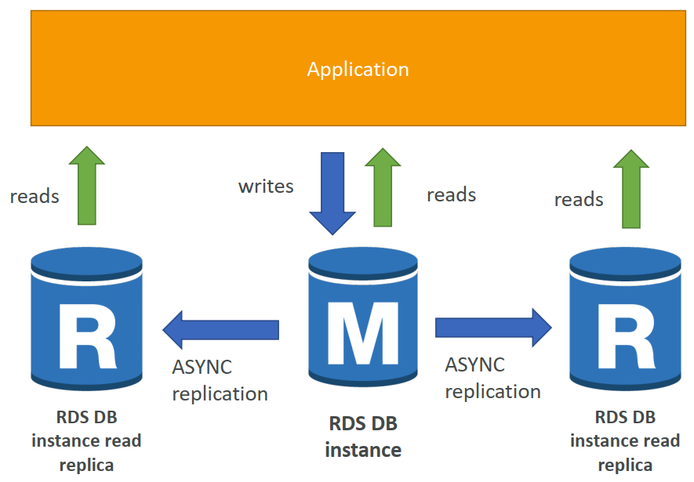
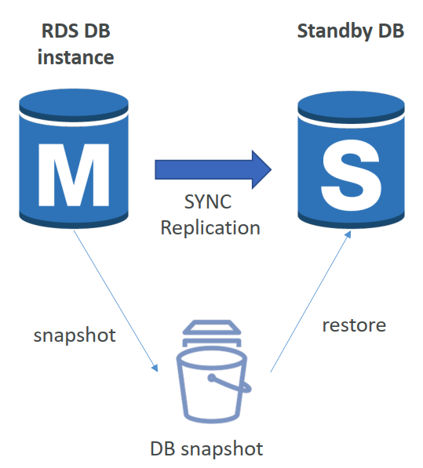
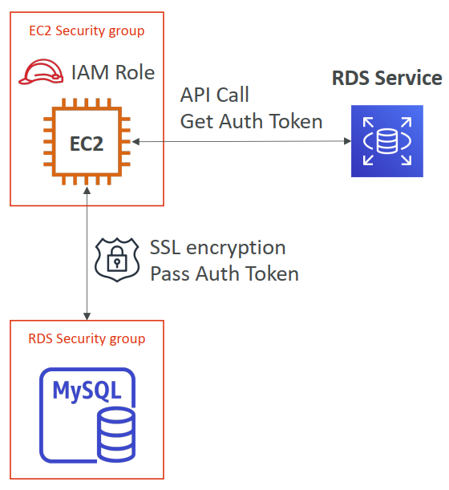
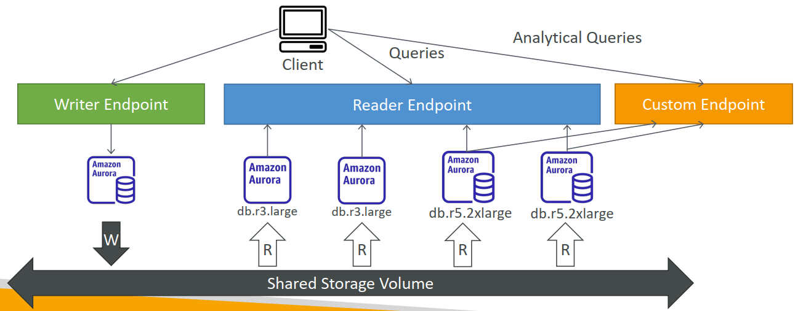

1. RDS Backups
- RDS中自动启用备份
- 自动化备份：
- 数据库的每日完整备份（在维护窗口期间）
- RDS每5分钟备份一次事务日志
- =>能够恢复到任何时间点（从最旧的备份到5分钟前）
- 7天保留期（可增加到35天）
- DB Snapshots:
- 用户手动触发
- 根据需要保留备份
2. RDS – Storage Auto Scaling
- 帮助您动态增加RDS数据库实例的存储空间
- 当RDS检测到您的可用数据库存储空间不足时，它会自动扩展
- 避免手动扩展数据库存储
- 您必须设置最大存储阈值（数据库存储的最大限制）
- 在以下情况下自动修改存储：
- 可用存储空间小于已分配存储空间的10%
- 低存储时间至少5分钟
- 距离上次修改已经过去了6个小时
- 适用于具有不可预测工作负载的应用程序
- 支持所有RDS数据库引擎（MariaDB、MySQL、PostgreSQL、SQL Server、Oracle）
3. 用于读取可扩展性的RDS读取副本
- 最多5个读取复制副本
- AZ内、跨AZ或跨区域
- 复制是ASYNC，因此读取最终是一致的
- 副本可以升级到自己的数据库
- 应用程序必须更新连接字符串才能利用读取副本

4. RDS Read Replicas – Network Cost
- 在AWS中，当数据从一个AZ传输到另一个时，会产生网络成本
- 对于同一区域内的RDS读取副本，您不需要支付该费用
5. RDS Multi AZ (Disaster Recovery)
- SYNC replication, Increase availability

6. RDS – From Single-AZ to Multi-AZ
- 零停机操作（无需停止数据库）
- 只需点击数据库的“修改”
- 以下情况在内部发生：
- 拍摄快照
- 在新的AZ中从快照恢复新的DB
- 在两个数据库之间建立同步

7. RDS Security - Encryption
- 静态加密
- 可以使用AWS KMS-AES-256加密对主副本和读取副本进行加密
- 必须在启动时定义加密
- 如果主机未加密，则读取的复制副本无法加密
- 可用于Oracle和SQL Server的透明数据加密（TDE）
- In-flight encryption
- SSL证书将数据加密到飞行中的RDS
- 在连接到数据库时提供带有信任证书的SSL选项
- 要强制执行SSL：
- PostgreSQL：在AWS rds控制台中rds.force_ssl=1（参数组）
- MySQL：在数据库中：
GRANT USAGE ON *.* TO 'mysqluser'@'%' **REQUIRE SSL**;
8. RDS Security – IAM
- Access Management
- IAM策略有助于控制谁可以管理AWS RDS（通过RDS API）
- 传统用户名和密码可用于登录数据库
- 基于IAM的身份验证可用于登录RDS MySQL和PostgreSQL
9. RDS - IAM Authentication
- IAM数据库身份验证适用于MySQL和PostgreSQL
- 您不需要密码，只需通过IAM和RDS API调用获得身份验证令牌
- 身份验证令牌的生存期为15分钟
- 优点：
- 网络输入/输出必须使用SSL加密
- IAM将集中管理用户而不是DB
- 可以利用IAM角色和EC2实例配置文件进行轻松集成

10. Amazon Aurora
- Aurora是AWS的专有技术（非开源）
- Postgres和MySQL都支持Aurora数据库（这意味着你的驱动程序将像Aurora是Postgres或MySQL数据库一样工作）
- Aurora是“AWS云优化”，声称在RDS上的性能比MySQL提高了5倍，是Postgres在RDS上性能的3倍以上
- Aurora存储以10GB的增量自动增长，最高可达128 TB。
- Aurora可以有15个副本，而MySQL有5个，并且复制过程更快（副本延迟不到10毫秒）
- Aurora中的故障切换是即时的。它是HA（高可用性）本机。
- Aurora的成本高于RDS（高出20%），但效率更高
11. Aurora High Availability and Read Scaling
- 6 copies of your data across 3 AZ:
- 写入需要6份副本中的4份
- 6份中有3份需要被读取
- 使用对等复制实现自我修复
- 存储跨100个卷进行条带化
- 一个Aurora实例需要写入（主）
- 在不到30秒内实现主设备的自动故障切换
- Master+最多15个Aurora Read副本提供读取
- 支持跨区域复制
12. Aurora – Custom Endpoints
- 将Aurora实例的子集定义为自定义端点
- 示例：对特定复制副本运行分析查询
- 在定义自定义端点之后，通常不会使用读取器端点

13. Global Aurora
- Aurora Cross Region Read Replicas:
- 对灾难恢复有用
- 易于安装
- Aurora Global Database (recommended):
- 1主区域（读/写）
- 最多5个辅助（只读）区域，复制滞后时间小于1秒
- 每个辅助区域最多16个读取副本
- 有助于降低延迟
- 升级另一个区域（用于灾难恢复）的RTO小于1分钟
14. ElastiCache – Redis vs Memcached
Redis：
- 带自动故障切换的多AZ
- 读取副本*以扩展读取并具有高可用性
- 使用AOF持久性的数据持久性
- 备份和恢复功能**
Memcached：
- 用于数据分区（分片）的多节点
- 没有高可用性（复制）
- *非持久性
- 无备份和恢复**
- 多线程体系结构
15. ElastiCache – Cache Security
- ElastiCache中的所有缓存：
- 不支持IAM身份验证
- ElastiCache上的IAM策略仅用于AWS API级安全
- Redis AUTH
- 创建Redis集群时可以设置“密码/令牌”
- 这是缓存的额外安全级别（位于安全组之上）
- 支持SSL飞行中加密
- Memcached
- 支持基于SASL的身份验证（高级）
16. Patterns for ElastiCache
- 懒惰加载：所有读取的数据都被缓存，数据可能会在缓存中变得过时
- 直写：在写入数据库时添加或更新缓存中的数据（无陈旧数据）
- 会话存储：将临时会话数据存储在缓存中（使用TTL功能）
引用：在计算机科学中只有两件困难的事情：缓存失效缓存失效 并命名事物
17. ElastiCache – Redis Use Case
- 游戏排行榜的复杂计算
- Redis排序集保证了唯一性和元素顺序
- 每次添加新元素时，都会对其进行实时排名，然后添加到正确的顺序